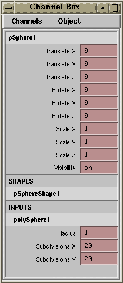

tearoffChannelBox
Maya provides the functionality for tearoff menus and windows. However, two components of Maya's UI are notably void of this capability: the Channel Box and the Tool Shelf.
Not any more.
The "tearoffChannelBox" script, intuitively, creates a Channel Box window, as illustrated at right.
This MEL script requires the support of the following:
generateTearoffChannelMenu.mel
This is essentially a verbatim copy of "generateChannelMenu," with the hard-coded "mainChannelBox" nodes renamed to "tearoffChannelBox". This allows the menus to update interactively.
initChannelBox.mel
This is a standard startup MEL script; you should have this one.
This tear-off version of the Channel Box does not support the following functions:
Manipulator Settings menu
Channel Names menu
Auto-detect and adjust for long/short/nice names
Install both this script and "generateTearoffChannelMenu.mel" into your
"$HOME/maya/scripts/" directory, then call this function.